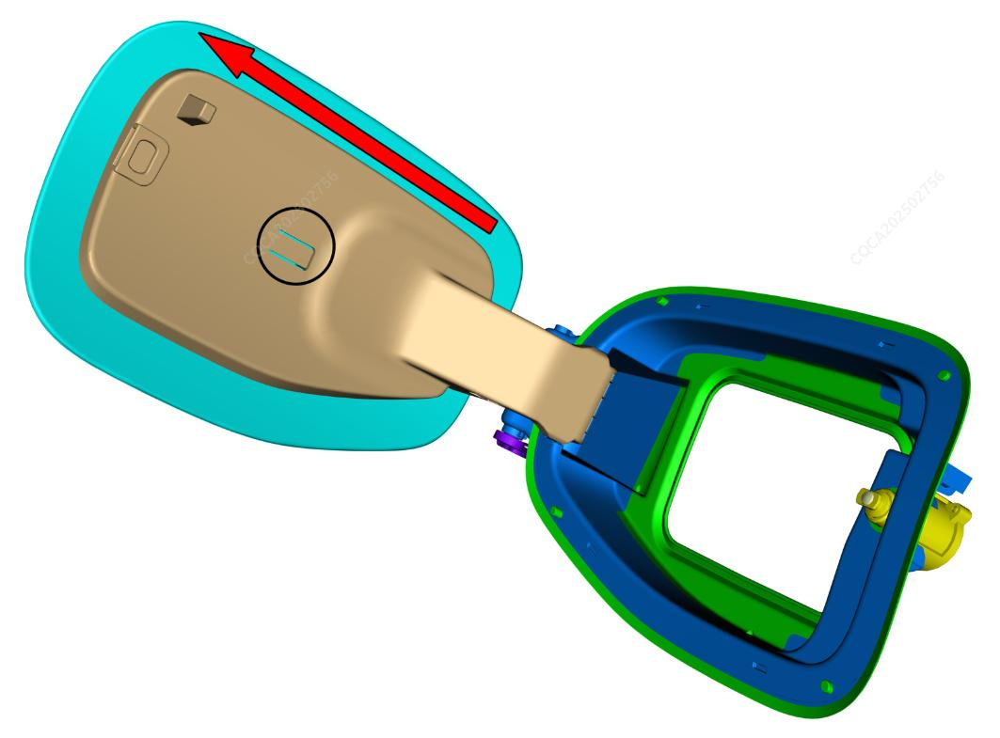

При открытом лючке зарядного гнезда для демонтажа узла внешней крышки лючка зарядного гнезда необходимо использовать тонкую плоскую отвертку: вставить жало отвертки в ограничительный зазор на задней стороне узла внешней крышки лючка зарядного гнезда, отогнуть ограничительный выступ отверткой на определенный угол и одновременно сдвинуть узел внешней крышки лючка зарядного гнезда в направлении стрелки, чтобы снять его с шарнира узла коробки фиксатора крышки зарядного гнезда.

Установка в целом выполняется в обратном порядке, инструменты не требуются: совместить ограничительную структуру на узле внешней крышки лючка зарядного гнезда с шарниром коробки фиксатора крышки зарядного гнезда и напрямую задвинуть до щелчка.